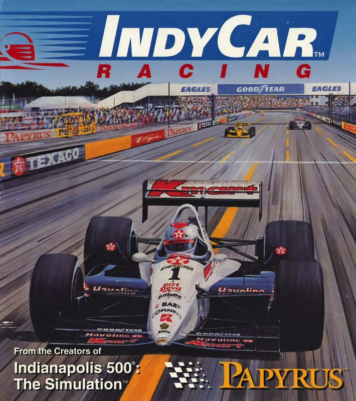

Play date: 1993
Developer: Papyrus
Publisher: Papyrus
Memo: Custom class names, orders
Description: IndyCar Racing is a racing video game by Papyrus Design Group released in 1993. Papyrus, consisting of David Kaemmer and Omar Khudari, previously developed Indianapolis 500: The Simulation, released in 1989. The game was intended as a realistic simulation of IndyCar's 1993 PPG Indy Car World Series. The game featured a selection of the contemporary chassis and engines and eight circuits which could be raced individually or as part of a championship season. Subsequent expansion packs added a further seven tracks and, later, the Indianapolis Motor Speedway.